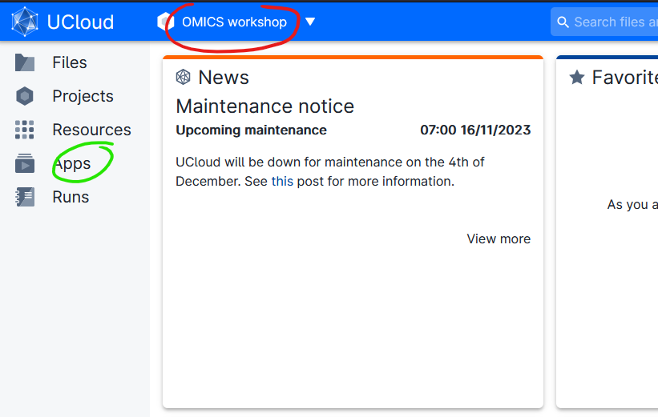
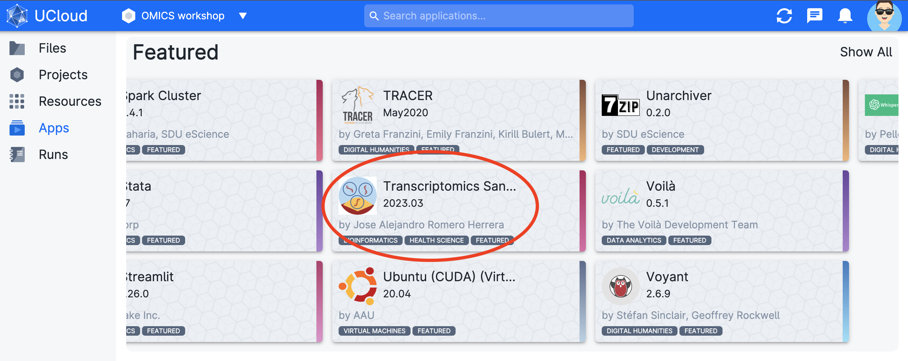
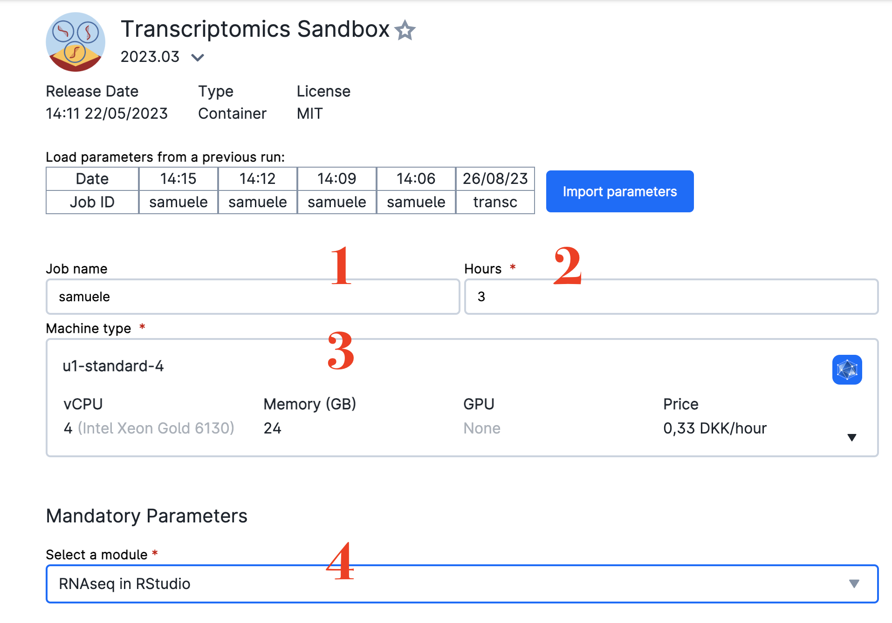
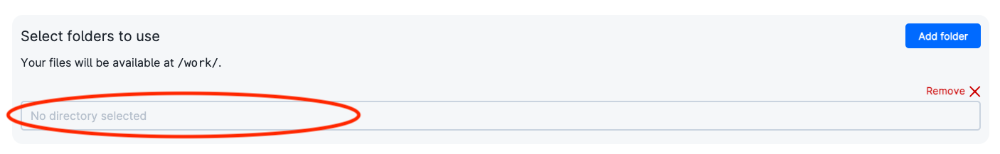
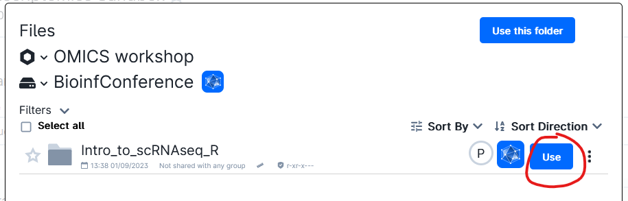
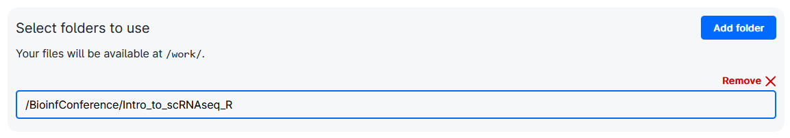
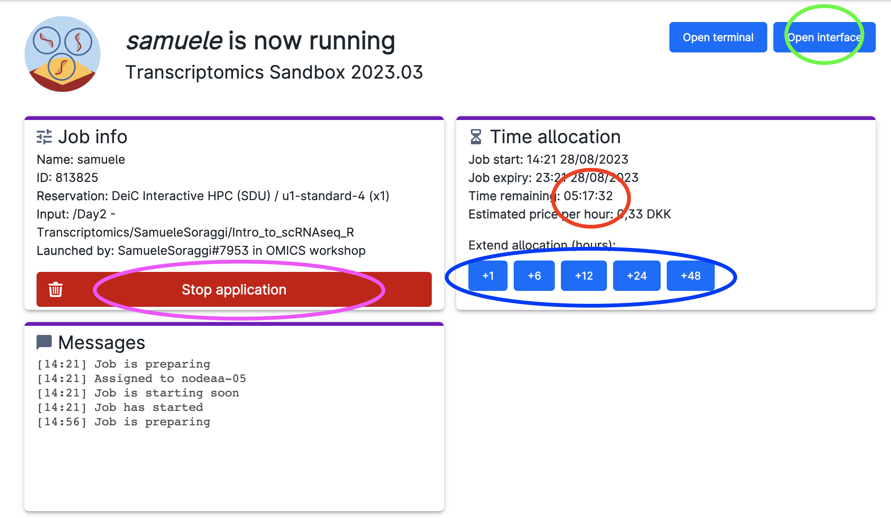

Sandbox Workshop
Autumn 2023
Welcome to the homepage for in-person workshops introducing the Health Data Science Sandbox to potential users. Thanks for joining us!
!!! info “Upcoming Workshop at AAU” Intro to the Health Data Science Sandbox at Aalborg University
Interested in adding **new analysis techniques** to your health data science skill set? Curious about how to use Danish **supercomputing resources**? Looking for how to host **coding material for your own course** as an academic educator? Join our workshop for a demo of the Health Data Science Sandbox, a platform for training and research being built collaboratively across 5 universities. We will introduce our mission, network, and resources and then give you an opportunity to try out our omics-focused training module with **single cell RNA sequencing data** in a guided live session on UCloud (experience with R is a plus but not required). The workshop is open for students, researchers, and educators.
- Instructors: Sandbox Data Scientists Jakob Skelmose (AAU CLINDA) and Samuele Soraggi (AU BiRC)
- Time: 6 December 2023, 1200-1600
- Location: SLV249 moedelokale 11.01.032 at AAU SUND
- Prerequisites: anyone can join for the first hour to hear about Sandbox resources, how to use them, and plans for the future. Some experience with R or Python will help you if you join the following transcriptomics app demo for the rest of the session (but all are welcome).
- [Sign up](https://www.moodle.aau.dk/course/view.php?id=50047) on AAU's Moodle or [email the Sandbox](mailto:nhds_sandbox@sund.ku.dk) with questionsAgenda
- The Sandbox Concept - 30 minutes
- Accessing Sandbox resources - 10 minutes
- Try out our transcriptomics module - 2 hours
- Discussion and feedback - 20 minutes
The Sandbox concept
The Health Data Science Sandbox aims to be a training resource for bioinformaticians, data scientists, and those generally curious about how to investigate large biomedical datasets. We are an active and developing project seeking interested users (both trainees and educators). All of our open-source materials are available on our Github page and much more information is available on the rest of the website you are currently visiting! We work with both UCloud and Computerome (major Danish academic supercomputers) - see our HPC Access page for more info on each set up.
Access Sandbox resources
We currently provide training materials and resources as topical apps on UCloud, the supercomputer located at the University of Southern Denmark. To use these resources, you’ll need the following:
- Log onto UCloud at the address http://cloud.sdu.dk using your university credentials.
- the ability to navigate in linux / RStudio / Jupyter. You don’t need to be an expert, but it is beyond our ambitions (and course material) to teach you how to code and how to run analyses simultaneously. We recommend a basic R or Python course before diving in.
Note:
- To use Sandbox materials outside of the workshop, you can request a project by clicking on
apply for resourcesin your uCloud dashboard. - If you are a BSc or MSc student, you need a supervisor to apply on your behalf, or you can try to apply yourself mentioning the supervisor approval in the application.
- Remember, however, that you have 1000Kr of computing credit, and around 50GB of free storage to work on uCLoud.
Try out our transcriptomics module
So our Sandbox data scientists have finished their intro at the workshop? Great, now the brave ones in the audience can try out one of our apps in a live session. Today we are demoing:
 ### Transcriptomics If you’re interested in bulk or single cell RNA sequencing analysis and visualization, join Sandbox Data Scientist Samuele Soraggi from Aarhus University in testing out our Transcriptomics Sandbox app.
### Transcriptomics If you’re interested in bulk or single cell RNA sequencing analysis and visualization, join Sandbox Data Scientist Samuele Soraggi from Aarhus University in testing out our Transcriptomics Sandbox app.
Follow these instructions to try our app:
Click on the button below to join the project for today: <!DOCTYPE html>
<p>Green Button</p> You should see a message on your browser where you have to accept the invitation to the project. This will add you to a project on uCloud, where we have data and extra computing credit for the course.
Be sure you have joined the project. Check if you have the project OMICS workshop from the project menu (red circle). Afterwards, click on the App menu (green circle) 
- Find the app
Transcriptomics Sandbox(red circle), which is under the titleFeatured.
- Find the app

- Click on it. You will get into the settings window. Choose any Job Name (Nr 1 in the figure below), how many hours you want to use for the job (Nr 2; choose at least 3 hours, you can increase this later), and how many CPUs (Nr 3, choose at least 4 CPUs). Choose the course
RNAseq in RStudiofrom the drop-down menu (Nr 4). Finally, click on the blue buttonAdd Folder.

- Now, click on the browsing bar that appears (red circle).

- In the appearing window, you should see already a folder called
Intro_to_scRNAseq_R. Click onUseat its right (red circle)

- Afterwards, you should have something like this in the settings page:

Now, click on Submit to start the app (the button is on the right side of the settings page)
You will now enter a waiting queue. When the session starts, the timer begins to count down (red circle), and you should be able to open the interface through the button (green circle). Note the buttons to add time to your session (blue circle) and the button to stop the session when you are done (pink circle)

Open the interface by clicking on the button (green circle of figure above). Sometimes you are warned of a missing connection: simply refresh the page. You will enter
Rstudio, well-known interface to code inR.Run the following command to download the tutorial:
download.file("https://raw.githubusercontent.com/hds-sandbox/ELIXIR-workshop/main/Notebooks/scRNAseq_Tutorial_R.Rmd", "tutorial_scrna.Rmd")Open the file
tutorial_scrnaR.Rmdthat should now appear in the file browser of Rstudio. Click now onvisual(on the tool bar) if you need to see the tutorial in a more readable format.The executable code is inside chunks (called cells) to be executed in order from the first to the last using the little green arrow appearing on the right side of each code cell.
Read carefully through the tutorial and execute the code cells. You will see the outputs appearing as you proceed.
Discussion and feedback
We hope you enjoyed the live demo. If you have broader questions, suggestions, or concerns, now is the time to raise them! If you are totally toast for the day, remember that you can check out longer versions of our tutorials as well as other topics and tools in each of the Sandbox modules or join us for a multi-day in person course.
As data scientists, we also would be really happy for some quantifiable info and feedback - we want to build things that the Danish health data science community is excited to use. Please answer these 5 questions for us before you head out for the day (link activated on day of the workshop).